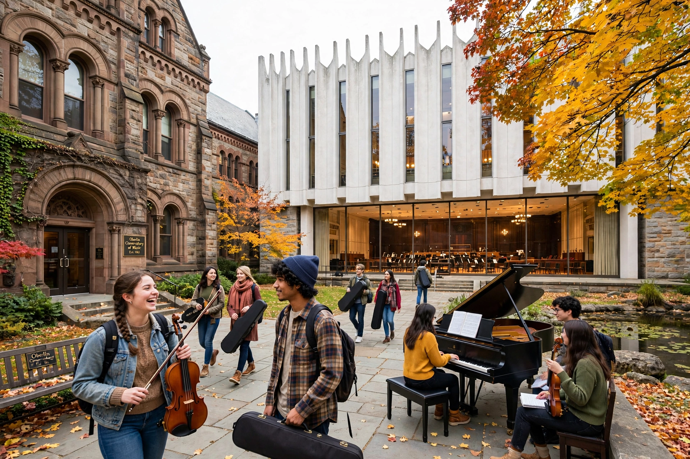

The Oberlin Conservatory of Music is a private music conservatory in Oberlin, Ohio, part of Oberlin College. Founded in 1865, it is the oldest continuously operating conservatory and the oldest coeducational conservatory in the United States.

| Oberlin Conservatory | |
|---|---|
| Established | 1865 |
| Location | Oberlin, Ohio, US |
| Parent | Oberlin College |
| Students | c. 560 |
The conservatory offers majors in performance, composition, jazz studies, musicology, conducting, electronic and computer music (TIMARA), and historical performance. Facilities include Warner Concert Hall and the Kohl Building for jazz. In 2009 it received the National Medal of Arts.
Alumni include composer William Grant Still, jazz musician Geri Allen, soprano Denyce Graves, and members of Eighth Blackbird and other ensembles. See Oberlin College.